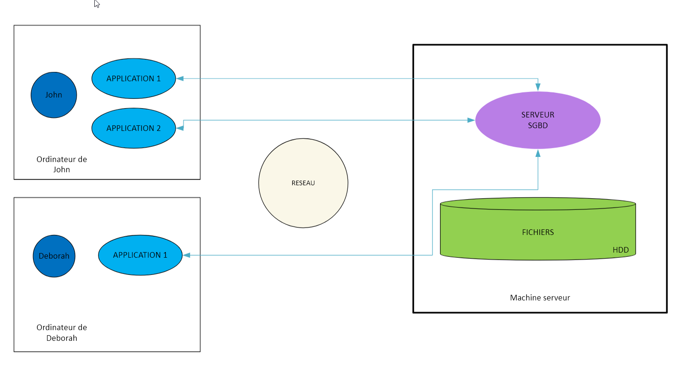

Une donnée c'est une valeur qui désigne une certaine information. C'est un entier, un flottant, une chaîne de caractères. Une donnée au sens brut, c'est une valeur. On parle également d'information dans le sens où les données sont qualifiées, on sait ce qu'elles représentent. Par exemple, si on donne le nom d'un élève, on sait que c'est un nom, si on donne un âge, on sait que c'est un âge.
Pour résumé, une donnée, c'est une valeur associée à la signification de cette valeur.
Les données servent à qualifier ce que l'on appel des entités, autrement dit des objets du monde réel. On se retrouve donc avec une certaine structuration (on parle de modélisation) qui permet de décrire les entités en fonction d'une application. Cette structuration consiste à distinguer ces entités, à les regrouper et à les décrire avec des données.
Par exemple, si on prend une application de gestion d'élèves, on peut distinguer les entités suivantes :
Chacune de ces entités est décrite par des données. Par exemple, un élève est décrit par son nom, son prénom, son âge, sa classe, etc.
Une base de données a une structure qui est définie par un ensemble de tables. Chaque table est composée de colonnes qui définissent les données de l'entité.
Si il n'y a pas de structure, on ne peut pas stocker les données de manière organisée. C'est pour cela que les bases de données sont structurées.
On parlera alors d'une collection, d'une liste de documents, de textes ou d'images.
Par exemple, une table élève peut contenir les colonnes suivantes :
Si nous prenons deux entités, élève et matières, nous pouvons les relier par une relation. Par exemple, l'entité élève étudie l'entité matières.
Nous essayons de faire une structuration des objets de manière à obtenir une bases de données qui soit cohérente et qui permette de stocker les données de manière organisée.
Une base de données, ce sont des données qui sont structurées selon des règles assez strictes si l'on veut que les données soient cohérentes et éviter les problèmes. La structure des bases de données va permettre de faire de l'interrogation précise du contenu de la BD.
Petite précision, lorsque l'on parle de valeur, on parle de valeur élémentaire ou atomique (les entiers, les flottants, les chaînes de caractères,...). Les valeurs atomiques ne peuvent pas être décomposées en d'autres valeurs. Par exemple, un nom est une valeur atomique, un prénom est une valeur atomique, un âge est une valeur atomique. A l'inverse, une adresse (tableau) est une valeur non atomique car elle est composée de plusieurs valeurs atomiques (numéro, rue, code postal, ville).
Les données sont groupées dans des bases de données avec comme importances :
La structuration permet de stocker les données de manière organisée, nous venons de l'aborder.
La cohérence permet de garantir que les données sont correctes.
La persistance permet de stocker les données de manière durable. Ce sont des fichiers sur un disque dur, des fichiers sur un serveur, des fichiers sur un cloud. Les données sont stockées de manière durable. Lors d'un arrêt ou d'un redémarrage de l'ordinateur (serveur), les données sont toujours présentes, puisque physiquement représentée dans des fichiers. Un fichier est-il une base de données ? Oui, si il est structuré et cohérent. Un fichier Excel est une base de données (liste de contact). Un fichier CSV est une base de données. Un fichier XML est une base de données.
Exemple de fichier structuré :
Le format CSV (Comma Separated Values) est un format de fichier qui permet de stocker des données tabulaires. Les données sont séparées par des virgules.
Exemple de fichier CSV :
"nom" ; "prenom" ; "age"
"Dupont" ; "Jean" ; 25
"Durand" ; "Paul" ; 30
"Martin" ; "Marie" ; 20
On retrouve dans le fichier CSV un format. Le format c'est la manière de coder les données que l'on a placé dans le fichier, ce codage (la représentation physique) est la manière dont on
distingue les différentes valeurs qui sont placées dans le fichier (les guillemets, les points-virgules, les virgules, les retours à la ligne, etc). Ces éléments de codage ne nous intéresse pas
dans une base de données, ce qui nous intéresse c'est la structure des données, c'est à dire les données elles-mêmes. Les problèmes sont les suivants :
Pour résoudre ces problèmes, on a inventé les bases de données. Les bases de données sont des logiciels qui permettent de gérer les données de manière structurée, cohérente et persistante. On va donc étudier, non pas directement les fichiers qui stockent les données, mais ce que l'on appel les sytèmes de gestion de base de données (SGBD).

Un SGBD c'est un système qui va entre autre gérer les fichiers de données pour nous.
Comme présenté ci-dessus, il y une machine de type serveur, sur ce serveur il y a un processus qui est le serveur du SGBD. Il est le seul habilité à accéder au disque et aux fichiers de données.
Il est également le seul a pouvoir gérer les ressource matérielles qui représentent la(les) base(s) de données présentent sur le serveur.
Une application ne communique pas directement avec les fichiers de données, elle communique avec le serveur du SGBD.
Dans le schéma ci-dessus, vous observez un exemple d'architecture "client-serveur". Vous avez une machine serveur sur lequel tourne le service SGBD,
qui va interprêter les commandes qu'il reçoit.
Vous avez également des machines clientes, sur ces machines clientes vous avez des programmes qui tournent et qui sont connectés
au serveur. Ces programmes échangent des commandes avec le serveur.
Dans ce cas, les problèmes de concurences, la fiabilité, les performances,... sont pris en charge par le SGBD.
Le serveur est un programme extrêment sophistiqué qui gère un ensemble de services, dont gestion de très grosses masses de données potentiellement.
Le serveur SGBD peut présenter une représentation logique des données très éloignée de la représentation physique.
Le niveau logique définit la modélisation des données.
Dans un SGBD nous avons ce que l'on appel des niveaiux d'abstractions. A partir du moment où nous avons un programme qui gère les données, nous n'avons plus besoin de connaître le format des fichiers, on peut s'abastraire de la représentation physique des données, càd de la manière dont elles sont stockées sur le disque. On peut se concentrer sur la structuration logique des données, càd sur les données elles-mêmes (ou représentation conceptuelle).
Un serveur de bases de données relationnelles fourni une représentation conceptuelle (logique) des données sous la forme de tables (tableaux). La représentation sous la forme
de tables n'a pas grand chose à voir avec le format d'encodage de ces tables. Nous faisons abstraction de pleins de détails qui ne nous intéressent pas.
Les seules choses que l'on veut savoir, c'est comment les données sont structurées conceptuellement pour pouvoir les interroger, les modifier, les supprimer, les ajouter, etc.
C'est un des rôles du serveur, qui est de nous fournir une vision des données, une vision extrêmement pratique, simple, d'un haut niveau d'abstraction et de cohérence. Cette vision,
c'est la vision du modèle de données. Càd que la structure que le serveur utilise pour représenter les données, c'est une structure qui est conforme à un modèle et le modèle que
nous souhaitons utiliser est le modèle relationnel. Il existe d'autres modèles mais le plus courant c'est le modèle relationnel, cve dernier s'appuie sur le SQL (Structured Query Language)
Pour manipuler les données, on utilise un langage de requête qui est le SQL. Le SQL permet (mais pas que) de faire des requêtes sur les données, de les modifier, de les supprimer, de les ajouter, etc.

On envoi des commandes sur notre représentation logique (tables) à l'aide du SQL et le serveur va se charger de traduire ces commandes en commandes physiques qui vont être exécutées sur les fichiers de données. Ces commandes en plus de la manipulation des données, permettent de définir la structure des données, de définir les contraintes d'intégrité, de définir les contraintes de sécurité, de définir les contraintes de performances, etc.
Comme nous venons de le voir, le SQL est le langage qu'il nous faudra connaitre, il est le plus répandu et le plus utilisé. Il est le langage de référence pour les bases de données relationnelles.